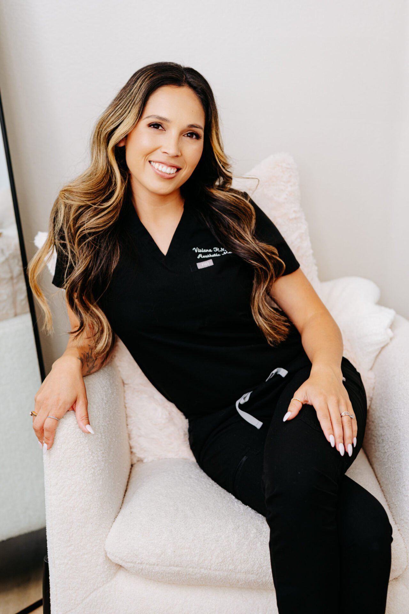
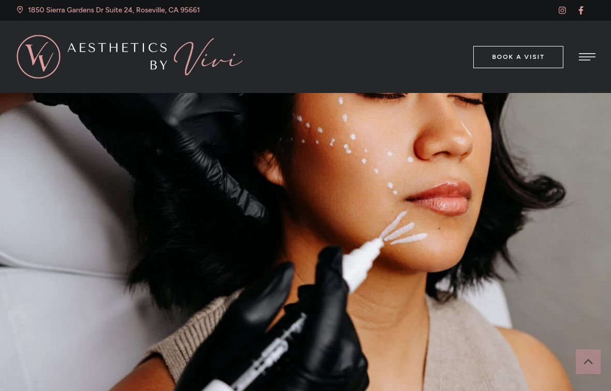

A recognizable point of view
Signature lips, facial balancing and biostimulators give the practice specific work to explain.
Vessel Archive × Aesthetics by Vivi / A local marketing review
We’re Vessel Archive, a local Sacramento team. We help local businesses get more leads, inquiries and bookings with local Meta ads (Facebook and Instagram), the content for those ads, and local SEO: helping people nearby find you through your Google Business Profile, website and useful blog content.
What we found + how we’d help ↘
Your own photography. Your own voice.
We reviewed Aesthetics by Vivi the way a potential client would, and the way an owner deciding where to spend a marketing budget would. Here’s what already builds confidence, what could make someone hesitate, and how we’d improve it.
01 / First, what you’re already doing well
Your gallery names specific treatments, your booking links already connect to Aesthetic Record, and your own social videos give the practice a personal voice. The live Google profile showed 5.0 stars from 332 reviews.
Signature lips, facial balancing and biostimulators give the practice specific work to explain.
Prominent booking links connect to Aesthetic Record. This proposal builds around the existing scheduling system.
The About page describes Vivi’s Sacramento State nursing background and the transition from hospital work to aesthetics.
There is already useful content here. The opportunity is to make attribution, service proof and the practitioner’s voice work together with more precision.
On the homepage, the Emily F. and Hailey W. cards repeat the same wording. Hailey W. also shares an outbound review URL with Yasmeen H. The names and source links need checking; this does not establish that the underlying reviews are false.
Homepage testimonial cards / names and link targets ↗Why a customer might hesitateWhen the same review appears under different names, genuine proof can look carelessly published. That can make a visitor less confident just before deciding to book.
Check every testimonial against its original review, then correct the name, quote and source link together. Keep the display tied to a verified source and a current review-date check.
The Biostimulator page’s Success Stories includes testimonials about lip treatments. They may demonstrate care, but they do not explain the outcome of the service the visitor is researching.
Biostimulator page / Success Stories section ↗Why a customer might hesitateSomeone considering biostimulators may still need to search elsewhere for relevant examples or explanations if the proof on that page is about lips.
Pair each priority treatment with relevant, consented case context or a practitioner explanation. Label general care testimonials clearly when treatment-specific proof is unavailable.
The site links to both a Facebook people-page address and the legacy /botox-by-vivi/ address. We have not established whether Facebook resolves them to one current profile.
Homepage / header and footer Facebook destinations ↗Why a customer might hesitateDifferent destinations can make the official profile harder to recognize if they resolve differently. One consistent route removes that uncertainty.
Confirm the preferred official Facebook destination and standardize the header, footer and profile links. Use clear link labels instead of the top-bar “Click here.”
The Instagram widget already links to Reels. Add a deliberately placed practitioner video beside priority treatment information instead of relying on visitors to discover the social feed.
The gallery already names treatment categories. Extend that useful structure with approved timing, goals and context rather than a larger pile of unexplained images.
The footer shows © 2025 and the site uses a static “more than 250” review statement. The live Google profile showed 332 reviews on October 20. Keep the display accurately sourced and dated; do not turn that total into a claim that every review is five-star.

The findings above link to the pages we reviewed on October 20. The customer impact is our practical judgment, not a measured count of lost inquiries. We would confirm the details with your team before making changes.
View the practice website ↗The live Google profile showed 5.0 stars from 332 reviews on October 20, 2026. The practice address and website were visible in the same profile.
Live Google profile ↗Vessel would: Keep the profile, website and booking route aligned, and bring accurately attributed review proof into the patient journey. Counts are a dated snapshot, not a permanent total.
The requested mobile PageSpeed run did not return a completed lab result during this review. No speed score is inferred from a failed or incomplete test.
Practice website ↗Vessel would: Establish the mobile baseline, then validate navigation, image loading and the first useful action on real devices before scaling traffic.
The public @nurse.vivii Instagram profile includes video content. Public profile inspection did not establish a reliable latest-post date; sign-in restricted the post-detail checks. This is not evidence of inactivity.
Official Instagram profile ↗Vessel would: Build on the existing voice. Review a dated content sample with account access, then connect the strongest practitioner explanations to the relevant service pages.
Meta Ad Library showed no matching active ads for the selected official advertiser with United States and All ads filters on October 20. This does not rule out other advertiser accounts, countries or channels.
Selected Meta advertiser ↗Vessel would: Confirm account ownership and existing campaigns first. Any proposed paid test should use approved creative, a focused page and a verified inquiry handoff.
Google Analytics, Tag Manager and Google Ads measurement tools are present. These are pieces of code used for measurement. Seeing them does not prove that inquiry tracking, consent or reporting work correctly.
Website script review ↗Vessel would: Preserve useful existing tools. Check which inquiries are recorded, how booking is handed to the team, and how reporting respects patient privacy with the account owner.
On October 20, Bing AI Mode answered “Which nurse-led aesthetics practices in Roseville should I compare for a consultation?” with a three-practice shortlist that did not include Aesthetics by Vivi. This is one prompt and one session, not universal AI visibility.
Exact sampled AI query ↗Vessel would: Strengthen practitioner and service context, keep authoritative profile details consistent, then repeat a fixed local query set over time. No inclusion or ranking is guaranteed.
Public checks dated October 20, 2026. Account-level measurement and clinical content would be confirmed with your team before changes are made.
The goal is straightforward: help the right local people find the practice, understand why it may fit, and take a clear next step. We would agree the focus and responsibilities together.
Review existing campaign ownership, then test a focused Facebook and Instagram creative set for one agreed treatment and the Roseville area.
Plan real practitioner-led video and practice photography. Edit approved material for Facebook, Instagram and the website, so the ad and the page tell the same story.
Align the Roseville Google Business Profile, practitioner details and priority treatment pages. Publish useful, approved answers about the services clients are researching. Local SEO means making the practice easier to find and understand in relevant nearby searches.
Refine one priority service page with relevant proof, a short explanation and a direct booking route. Confirm what the visitor sees next and how the team follows up.
Vessel: strategy, page design and implementation, shoot planning, filming, editing, approved campaign work and reporting.
Your team: clinical accuracy, patient permissions, capacity, access approval and the patient response process.
We’d agree the page list, filming schedule, campaign responsibilities and approvals together before work begins.
Bring the questions, the people and the setting together. A planned shoot should produce useful explanations that feel like the practice.
Show how the conversation begins, how goals are discussed and why assessment comes before selecting a treatment.
A clinically approved discussion of shape, proportion and individual goals. Use language that invites a consultation without promising a particular result.
A practitioner-led overview of the questions to ask, timing, limitations and follow-up. Pair it with service-relevant, consented case material only.
Filming is proposed. Any patient appearance or clinical claim needs appropriate permission and practitioner approval.
The sequence matters: agree the story, make the journey work, then learn from real inquiries. Dates depend on access, approvals and scheduling.
Correct review attribution and profile routes. Agree the priority treatment, approved proof and filming topics. Validate the existing booking and analytics handoff.
Publish the focused service page and first video series. Run an agreed creative test only after the campaign and measurement setup is reviewed.
Compare consultation quality across creative and pages. Refresh the strongest explanations and keep review, profile and service details current.
Local work. Real clients. A team you can talk to.
 AIMS Sports Recovery ↗
AIMS Sports Recovery ↗ Megan Meyerdick · Precision Home Loans
Megan Meyerdick · Precision Home LoansLet’s walk through the review together, choose one priority service and decide what to tackle first.
Talk through the first step ↗teo@vessel-archive.com · Sacramento, California